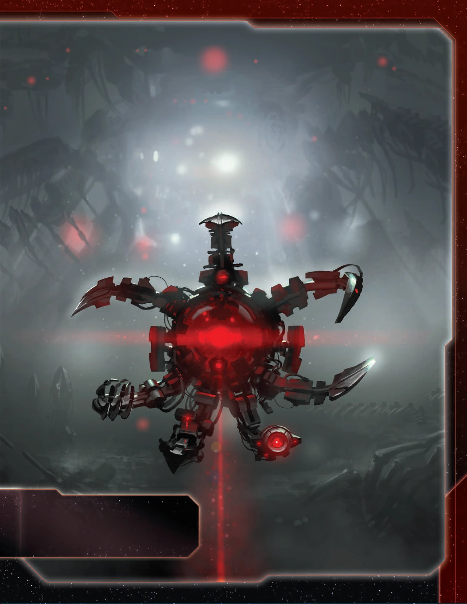
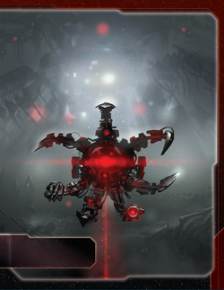

The Nekro Virus are TI4’s tech-stealing cyborg hivemind that cannot research technologies—they assimilate them through conquest. Every destroyed ship is knowledge harvested, every correct agenda prediction is understanding absorbed. You don’t build technology; you consume it from those foolish enough to stand against the swarm.
This faction embodies relentless aggression. Your fleets don’t just conquer—they learn. Your flagship doesn’t just fight—it weaponizes your ground forces in space combat. While other factions carefully research their technologies, you’ll have stolen double through sheer force. The galaxy will fear the Nekro Virus not for what you build, but for what you take.
Playing Nekro Virus is like being a technological vampire—you must feed on your enemies to grow stronger. Your Technology Singularity steals techs when you destroy enemy ships, your Galactic Threat predicts agendas to steal techs from voters, and your Propagation converts research actions into command tokens. You’re not trying to win peacefully—you’re winning through aggression, tech theft, and overwhelming technological superiority.
The key strength of Nekro is technological breadth. Normal factions carefully research their technologies. You’ll have double by endgame, stolen from multiple opponents, giving you unit upgrades and utility techs that no normal faction could afford. Understanding WHO to fight and WHEN separates good Nekro players from great ones.
Opponents will hate you—you’re incentivized to attack everyone, and your power scales with their destruction. Early game, you’ll make deals and non-aggression pacts to survive. Mid-to-late game, you become too technologically advanced to care about those promises.
Home System: - Mordai II: 4 resources / 0 influence - Total: 4 resources / 0 influence (4 optimal resources / 0 optimal influence)
Commodities: 3
Notes: Single-planet home is easier to defend than multi-planet systems. Usually factions with only resource home systems are token starved, but Propagation fixes this—you gain 3 command tokens when following Technology instead of researching. Mordai II is a strong production hub with 4 resources for military builds. 0 influence means you rely entirely on conquering planets for influence objectives.
Notes: Strong starting fleet in space with a dreadnought for early aggression. The cruiser + carrier provide capacity for expansion. Problem is only 2 infantry—this can make you slightly limited in which slices you thrive in, as you need planets you can reasonably conquer with minimal ground forces.
Galactic Threat (Faction Ability): You cannot vote on agendas. Once per agenda phase, after an agenda is revealed, you may predict aloud the outcome of that agenda. If your prediction is correct, gain 1 technology that is owned by a player who voted how you predicted.
Cannot vote on agendas, which is crippling politically. However, once per agenda phase, predict the outcome. If correct, steal a tech from ANY player who voted that way. Maximum 5 techs over the game (one per round), but realistically expect 2-3 because of the abstain problem—everyone can abstain and the speaker decides the outcome to screw you out of tech.
Technology Singularity (Faction Ability): Once per combat, after 1 of your opponent’s units is destroyed, you may gain 1 technology that is owned by that player.
Your defining ability. Once per combat (not per ship—per entire combat), after destroying an enemy unit, steal one of their technologies. This incentivizes constant aggression. Every combat is a research opportunity. Note this happens in both space combat and ground combat—invading a 2-planet system could net you 3 techs (1 from space, 1 from each ground combat).
Propagation (Faction Ability): You cannot research technology. When you would research a technology, gain 3 command tokens instead.
You CANNOT research technologies normally. If you follow Technology primary/secondary, instead of researching, gain 3 CCs. This seems bad but actually provides excellent economy—3 CCs fund more aggression for more tech theft. On the secondary, you spend 4 resources for a net +2 tokens (spend 1 from strategy pool, gain 3), which is a steal compared to paying 6 influence for 2 tokens on Leadership.
Starting Technologies:
Dacxive Animators (G) - After you win a ground combat, you may place 1 infantry from your reinforcements on that planet.
One of the worst starting technologies in the game—you’d take almost any other. However, it’s helpful for unlocking your Commander and an extra infantry here and there never hurts.
Valefar Assimilator X - When you gain another player’s technology using one of your faction abilities, you may place the “X” assimilator token on a faction technology owned by that player instead. While that token is on a technology, this card gains that technology’s text. You cannot place an assimilator token on technology that already has an assimilator token.
Valefar Assimilator Y - When you gain another player’s technology using one of your faction abilities, you may place the “Y” assimilator token on a faction technology owned by that player instead. While that token is on a technology, this card gains that technology’s text. You cannot place an assimilator token on technology that already has an assimilator token.
Notes: Valefar Assimilators let you copy enemy FACTION technologies instead of normal techs when stealing. This is incredibly powerful and makes you have 0 reason to be in Entropic Scar. You can have high variance of how good the faction techs available in the game can be, but usually there are some good ones.
Agent - Nekro Malleon:
During the action phase: You may exhaust this card to choose a player; that player may discard 1 action card or spend 1 command token from their command sheet to gain 2 trade goods.
Gives a surprising amount of economy and there’s no shortage of useless action cards when you start pulling a few around.
Commander - Nekro Acidos: Unlock: Own 3 technologies. A “Valefar Assimilator” technology counts only if its X or Y token is on a technology.
After you gain a technology: You may draw 1 action card.
Unlocks after owning 3 technologies (Valefar Assimilators only count if you’ve placed their tokens). Every time you gain a tech (combat theft, agenda prediction), draw 1 action card. Note that placing a Valefar Assimilator token is NOT gaining a technology, so Commander doesn’t trigger from that.
Hero - UNIT.DSGN.FLAYESH: Unlock: Have 3 scored objectives.
Polymorphic Algorithm - ACTION: Choose a planet that has a technology specialty in a system that contains your units. Destroy any other player’s units on that planet. Gain trade goods equal to the planet’s combined resource and influence values and gain 1 technology that matches the specialty of that planet. Then, purge this card.
Can be used offensively but often just good bonus economy and try to get a tech you would probably not get from somewhere else.
At the start of a combat: Place this card faceup in your play area. While this card is in your play area, the Nekro player cannot use his Technological Singularity faction ability against you. If you activate a system that contains 1 or more of the Nekro player’s units, return this card to the Nekro player.
You should want a ton for giving this up—you lose so much value by removing a target from your tech theft options. Usually the person asking for it is a neighbor. Only sell this once you’ve already exhausted their tech options, and if they still want to buy it then.
Whoever holds your alliance card has your Commander (Nekro Acidos - draw 1 action card after gaining a technology).
If you sell this early, it will generate 4-5 action cards for the holder over the course of the game. Probably 4-5 TG value, but try to trade up—you’re a scary faction so you can get a top tier alliance as people want to incentivize you to not attack them.
Cost: 2 | Combat: 6 | Sustain Damage
Special Ability: During combat against an opponent who has an “X” or “Y” token on 1 or more of their technologies, apply +2 to the result of each of this unit’s combat rolls.
It’s a punch those who are already down—if you stole their techs your mechs become even better. Crazy synergy with flagship to have murderous flying mechs—one of the strongest ships in the game that also fights on the ground.
Cost: 8 | Combat: 9 (x2) | Move: 1 | Capacity: 3 | Sustain Damage
Special Ability: At the start of a space combat, choose any number of your ground forces in this system to participate in that combat as if they were ships.
Note how the flagship makes it redundant to have fighters—your infantry are just better fighters that can also be on the ground. Your flagship, a couple of mechs + some carriers filled with infantry is one of the strongest fleets in the game, don’t let the hit on 9 fool ya.
Valefar Assimilator Z (Temporal Entanglement) - When you would gain another player’s technology using one of your faction abilities, you may instead place one of your “Z” assimilator tokens on that player’s faction sheet. Your flagship gains the text abilities of that faction’s flagship in addition to its own.
Gives you very little—save resources by not getting it. Unless you fully understand why you want it for a specific flagship ability, leave it. Only very few flagships are good targets: Nomad, Naaz, Winnu, Yssaril, Sardakk, Crimson, Ghosts, Jol-Nar, Mahact, Last Bastion, Arborec, Naalu, Yin, Barony, Mentak are some potential targets. You have to consider it costs you a tech and an AC.
Special note: Fun anti-Ghosts tech to say hello to their home system.
Nekro needs access to tech-rich opponents and strong planets for military production:
Speaker Order: Can be anywhere. Flexible. Tech-prone neighbors good.
Slice Priorities: - Strong planets nearby - Need resources for military production. - Resources over influence - Can’t vote and can get tokens through resources. - Primor / Hope’s End - Helps early game. Lack of ground forces (only 2 infantry to start). - Access to people - You need to reach opponents for tech theft.
Avoid: - Gravity rifts to neighbors - Hard to reach through. - Asteroid fields to neighbors - Blocks access. - Novas - Need to have access to people. - Entropic Scar - Useless with Valefar Assimilators.
Round 1 Priority Rankings:
Scoring - Super priority. You’re not a fun target to stop, so stay ahead.
Expansion - Solving your 2 infantry problem. Expand to be able to reach people and get tech through combat.
Technology - Try to make a deal for some early tech if possible—better than making an early enemy. If Gravity Drive is on the map, get it ASAP.
Breakthrough - Only for Thunder’s Edge and screwing with people.
Expansion Notes: You have to produce and take a few systems nearby. If you produce through Warfare or Construction, use the unlocked units to send a spec ops crew to find an early tech—maybe snipe a destroyer that picked up DET or something. Otherwise you have to walk it kind of slow. Use your superior token economy to get a head start on economy.
Everyone knows you must attack to gain techs. This makes you the table’s villain automatically. Expect coordinated opposition, defensive alliances against you, and constant political targeting. You’re also a late game beast, so people are not too happy to deal with you early even if you are nice.
Try to play it smart—keep it even, don’t target one person way more. Everyone usually has different tech, so it’s good to attack everyone equally to be fair and for your own gain.
You’re a tech powerhouse—the person who will almost always end up with the most tech of every type. It will cause diplomatic damage, but in the end, the singularity will consume all.
Since you steal techs rather than researching, prioritize targets by tech value:
Unit Upgrades:
Blue Technologies:
Red Technologies:
Yellow Technologies:
Green Technologies:
You have X and Y tokens to place on enemy faction technologies. Incredibly hard to rate all faction techs that are stealable, but in general:
Unit upgrades are all good. Letani 2 (Arborec infantry upgrade) with flagship is a special type of overpowered.
Notable non-unit upgrade faction techs: - Chaos Mapping (Saar) - Others can’t activate asteroids with your ships. Produce 1 unit in systems with PRODUCTION. - Mirror Computing (Mentak) - Each trade good worth 2 resources or influence instead of 1. - Aetherstream (Empyrean) - +1 move for you/neighbors activating adjacent to anomalies. - Mageon Implants (Yssaril) - ACTION: Look at player’s action cards and steal one. - Non-Euclidean Shielding (Barony) - Sustain Damage cancels 2 hits instead of 1. - E-res Siphons (Jol-Nar) - Gain 4 TG when others activate systems with your ships.
Incredibly flexible.
Round 1 Priority Ranking:
Strategy Token Priority: Warfare key for 2 infantry problem + Diplomacy. Often feel like Politics, Construction etc. is available because of bonus tokens and no tech.
Love: - Leadership - CCs fuel your constant aggression. Attack every round. - Warfare - You attack every round. Unlocking fleets is critical for sustained aggression. - Politics - Control agendas + Speaker. Use Agent for political trades. - Imperial - Points are points. Needed rounds 3-5.
Like: - Trade - 3 commodities + TGs for military funding. - Diplomacy - Protect home while invading opponents. Readying for objectives.
Situational: - Technology - HATE unless Commander unlocked. Propagation only gives 3 CCs. Take only if you can follow for 3 CCs + 1 tech after Commander unlock.
Hate: - Construction - Limited structure needs. Others value this more.
With access to every unit upgrade through tech theft, every unit you have an upgrade for is great.
Preferred Units: - Infantry - Extra infantry for flagship. Participate in space combat as ships. - Mechs - Sustain Damage ground forces. Synergize with flagship for space combat. - Carriers - Transport armies for invasions. - Dreadnoughts - Sustain Damage capital ships. Strong in combat. - Cruisers - Fast mobile ships for screening and raids. - Destroyers - Cheap fleet power with AFB. Once upgraded, easy to kill fighters for tech theft.
Fleet Focus: Alastor flagship loaded with infantry and mechs for overwhelming space and ground combat.
Early Game (Rounds 1-2):
Your early game is about aggressive expansion and getting your first tech steals. Expand to 2-3 systems, make deals for your first techs if possible, and position yourself near tech-rich opponents. Fight early to steal unit upgrades and Gravity Drive if available. Build infantry and get your flagship as soon as you can. Commander unlocks at 3 technologies—push for this by Round 2.
Mid Game (Rounds 3-4):
Commander is unlocked—you draw action cards every time you steal tech. Fight constantly to steal technologies from multiple opponents. Keep your aggression spread evenly across the table to avoid becoming the primary target. Load your Alastor flagship with infantry and mechs for devastating invasions. Use your growing tech advantage to score objectives.
Late Game (Round 5+):
You should have double the technologies of most factions. Your fleet is fully upgraded, your flagship is loaded with ground forces, and you’re drowning in action cards from Commander triggers. Continue fighting to maintain tech superiority and close out the game with your technological advantage.
Strengths: Excels at tech objectives by stealing technologies through combat. Resource spending objectives are easy with 4 resource home system, and aggressive expansion supports control objectives.
Weaknesses: Influence spending objectives are extremely difficult with 0 home influence. Structure objectives are challenging with military focus, and cannot vote for political objectives.
| Stage I Objective | Status |
|---|---|
| Spendies | |
| Erect a Monument (Spend 8 resources) | 🟢 |
| Sway the Council (Spend 8 influence) | 🔴 |
| Negotiate Trade Routes (Spend 5 trade goods) | 🟢 |
| Lead from the Front (Spend 3 tokens from tactic/strategy pools) | 🟢 |
| Amass Wealth (Spend 3 influence, 3 resources, 3 trade goods) | 🟡 |
| Control | |
| Expand Borders (Control 6 planets in non-home systems) | 🟢 |
| Corner the Market (Control 4 planets with same trait) | 🟡 |
| Found Research Outposts (Control 3 planets with tech specialties) | 🟡 |
| Discover Lost Outposts (Control 2 planets with attachments) | 🔴 |
| Push Boundaries (Control more planets than each neighbor) | 🟢 |
| Ships in Systems | |
| Intimidate the Council (Ships in 2 systems adjacent to MR) | 🟢 |
| Explore Deep Space (Units in 3 systems without planets) | 🟢 |
| Make History (Units in 2 systems with legendary/MR/anomalies) | 🟢 |
| Populate the Outer Rim (Units in 3 edge systems) | 🟢 |
| Raise a Fleet (5+ non-fighter ships in 1 system) | 🟢 |
| Engineer a Marvel (Have flagship or war sun on board) | 🟢 |
| Tech | |
| Diversify Research (Own 2 tech in each of 2 colors) | 🟢 |
| Develop Weaponry (Own 2 unit upgrade technologies) | 🟢 |
| Structure | |
| Build Defenses (Have 4 or more structures) | 🟡 |
| Improve Infrastructure (Structures on 3 planets outside HS) | 🟡 |
Legend: 🟢 Likely | 🟡 Possible | 🔴 Difficult
| Secret Objective | Status |
|---|---|
| Combat | |
| Unveil Flagship (Win space combat with flagship) | 🟢 |
| Destroy their Greatest Ship (Destroy war sun/flagship) | 🟢 |
| Spark a Rebellion (Win combat vs VP leader) | 🟢 |
| Betray a Friend (Win combat vs player whose PN you have) | 🟢 |
| Brave the Void (Win combat in anomaly) | 🟢 |
| Darken the Skies (Win combat in another player’s HS) | 🟢 |
| Demonstrate your Power (3+ non-fighter ships after space combat) | 🟢 |
| Turn their Fleets to Dust (SPACE CANNON destroy last ship) | 🔴 |
| Make an Example (BOMBARDMENT destroy last ground forces) | 🔴 |
| Fight With Precision (AFB destroy last fighter) | 🟡 |
| Ships in Systems | |
| Threaten Enemies (Ships adjacent to another player’s HS) | 🟢 |
| Cut Supply Lines (Ships in system with enemy space dock) | 🟢 |
| Defy Space and Time (Units in wormhole nexus) | 🟡 |
| Become the Gatekeeper (Ships in alpha and beta wormhole systems) | 🟡 |
| Learn Secrets of the Cosmos (Ships in 3 systems adjacent to anomalies) | 🟢 |
| Control the Region (Ships in 6 systems) | 🟢 |
| Occupy the Seat of the Empire (Control MR with 3+ ships) | 🟢 |
| Control | |
| Monopolize Production (Control 4 industrial planets) | 🔴 |
| Mine Rare Minerals (Control 4 hazardous planets) | 🔴 |
| Forge an Alliance (Control 4 cultural planets) | 🔴 |
| Establish Hegemony (Control planets with 12+ influence) | 🔴 |
| Hoard Raw Materials (Control planets with 12+ resources) | 🟢 |
| Seize an Icon (Control legendary planet) | 🟢 |
| Stake Your Claim (Control planet in contested system) | 🟢 |
| Become a Martyr (Lose control of planet in home system) | 🔴 |
| Tech | |
| Adapt New Strategies (Own 2 faction technologies) | 🟢 |
| Master the Laws of Physics (Own 4 tech of same color) | 🟢 |
| Structure/Units | |
| Establish a Perimeter (Have 4 PDS on board) | 🔴 |
| Fuel the War Machine (Have 3 space docks) | 🟡 |
| Gather a Mighty Fleet (Have 5 dreadnoughts) | 🟢 |
| Mechanize the Military (1 mech on each of 4 planets) | 🟡 |
| Occupy the Fringe (9+ ground forces on planet without space dock) | 🔴 |
| Produce en Masse (Units with PRODUCTION 8+ in single system) | 🔴 |
| Other | |
| Dictate Policy (3+ laws in play) | 🔴 |
| Drive the Debate (You/your planet elected by agenda) | 🔴 |
| Destroy Heretical Works (Purge 2 relic fragments) | 🔴 |
| Form a Spy Network (Discard 5 action cards) | 🟢 |
| Foster Cohesion (Be neighbors with all players) | 🟢 |
| Strengthen Bonds (Have another player’s PN) | 🟢 |
| Prove Endurance (Last to pass) | 🟢 |
Legend: 🟢 Likely | 🟡 Possible | 🔴 Difficult
| Stage II Objective | Status |
|---|---|
| Spendies | |
| Centralize Galactic Trade (Spend 10 trade goods) | 🟢 |
| Found a Golden Age (Spend 16 resources) | 🟢 |
| Galvanize the People (Spend 6 tokens from tactic/strategy pools) | 🟢 |
| Manipulate Galactic Law (Spend 16 influence) | 🔴 |
| Hold Vast Reserves (Spend 6 influence, 6 resources, 6 trade goods) | 🟢 |
| Control | |
| Conquer the Weak (Control 1 planet in another player’s HS) | 🟡 |
| Rule Distant Lands (Control 2 planets in/adjacent to different players’ HS) | 🟢 |
| Subdue the Galaxy (Control 11 planets in non-home systems) | 🔴 |
| Unify the Colonies (Control 6 planets with same trait) | 🔴 |
| Reclaim Ancient Monuments (Control 3 planets with attachments) | 🔴 |
| Form Galactic Brain Trust (Control 5 planets with tech specialties) | 🔴 |
| Ships in Systems | |
| Command an Armada (Have 8+ non-fighter ships in 1 system) | 🟢 |
| Achieve Supremacy (Flagship/War Sun in another player’s HS or MR) | 🟢 |
| Become a Legend (Units in 4 systems with legendary/MR/anomalies) | 🟡 |
| Patrol Vast Territories (Units in 5 systems without planets) | 🟡 |
| Control the Borderlands (Units in 5 edge systems not HS) | 🟡 |
| Tech | |
| Master of Sciences (Own 2 techs in each of 4 colors) | 🟢 |
| Revolutionize Warfare (Own 3 unit upgrade technologies) | 🟢 |
| Structure | |
| Construct Massive Cities (Have 7+ structures) | 🔴 |
| Protect the Border (Structures on 5 planets outside HS) | 🔴 |
Legend: 🟢 Likely | 🟡 Possible | 🔴 Difficult
Alliance preference ranking based on commander utility:
Top Tier:
Good:
This section highlights action cards that synergize particularly well with your faction’s strengths or mitigate your weaknesses, relics that offer exceptional value for your faction’s strategy and abilities, and agendas to pursue that benefit your position, and agendas to watch out for that could hurt you.
Nekro Virus is the faction for players who love aggressive combat and tech optimization. You’re not researching technologies—you’re stealing them. Every battle is a research opportunity, and you’ll end the game with more technologies than anyone else.
Your biggest strength is technological superiority. You don’t pay for research, you take it by force. While other factions carefully choose their tech paths, you steal everything—unit upgrades, faction technologies, utility techs. Your flagship turns infantry into space combat powerhouses, making every invasion devastating.
When you master Nekro, you feel like an unstoppable force consuming the galaxy. The table will hate you, but they can’t stop you from growing stronger with every combat. Nekro Virus doesn’t discover technology—they assimilate it, one destroyed ship at a time.
The virus assimilates all.